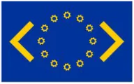

Funding stipends for contributors new to open source worldwide, and matching applied AI projects in Europe with international open source projects
European Summer of Code (ESoC) funds stipends for contributors new to open source, and matches open source projects and applied AI projects throughout Europe. We are much indebted to the Google Summer of Code for inspiration.
Providing opportunities to engage with open source worldwide.
Linking the worldwide open source landscape with private and public sector projects
Providing support to the wider open source ecosystem
Discover what makes ESOC a unique and rewarding experience
Contribute to projects used by developers worldwide and create lasting change.
Learn new technologies and gain hands-on experience with real-world projects.
Connect with maintainers and developers from every corner of the globe.
Key dates and milestones for the European Summer of Code 2026 program.
ESoC info event sponsored by AI-on-Demand Platform. General info, applicant guide, Q&A.
First batch of 2026 projects released. Applications open.
Deadline for Batch 1 applications (18:00 UTC).
Second batch of 2026 projects released. Applications open.
Accepted Batch 1 applicants begin their projects.
Deadline for Batch 2 applications (18:00 UTC).
Accepted Batch 2 applicants begin their projects.
Everything you need to know about participating in European Summer of Code (ESoC)
ESOC is open to students, junior developers, and contributors worldwide who are new to open source and interested in working on applied AI and European open source projects.
Yes. Selected contributors receive stipends to support their work during the program period.
Prior experience is helpful but not mandatory. ESOC specifically supports contributors who are new to open source.
Projects are proposed by open source organizations and evaluated based on impact, feasibility, and mentorship availability.
Yes. ESOC welcomes contributors globally while focusing on strengthening open source initiatives within Europe.
Take part in European Summer of Code 2026 and contribute to impactful open source and applied AI projects across Europe.
Apply for ESOC Now!